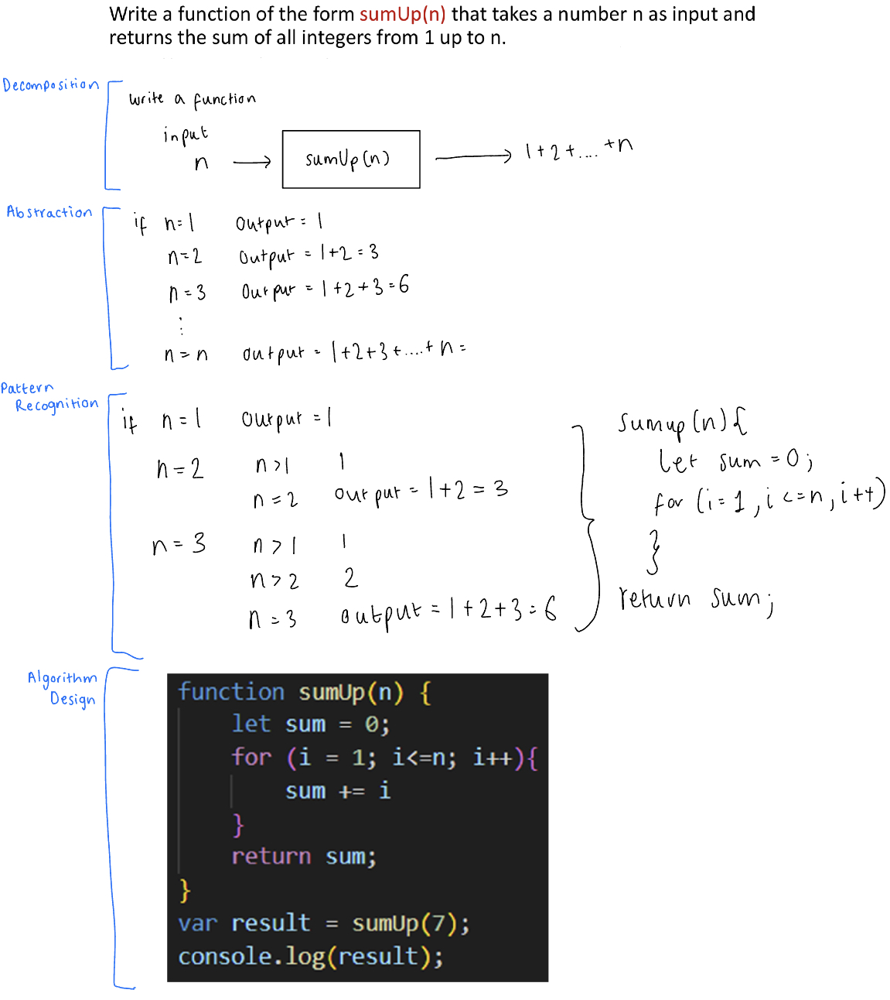

Being a mathematics graduate, I first struggled to understand how to communicate my solutions. In the exercise shown below, my initial thoughts were to use an equation for sum of integers. However after using the computational steps I was able to write a more efficient algorithm. I used decomposition to understand the different parts to the question. Abstraction helped me highlight the key steps. I used pattern recognition to find any reoccurring steps (for example a loop). And finally wrote this in an algorithm that the computer understood using algorithm design. Also through computational modelling i was able to understand variable declarations and initialization in JavaScript using the JS Machine. This made it easier to understand where the bugs in my code were coming from, and understand how digital computers work when programming.
Computational thinking is a structured approach to solve complex problems.[1] It involves taking a problem, understanding the problem, and breaking it down into a series of small, more manageable parts to find a solution. Computers are very useful for solving problems faster and more efficiently; however, in order to do this, we need to communicate the problem in a precise primitive formal language that computers understand. [2] Computational thinking is a very useful skill that helps us create algorithms that computers understand.
"Computational thinking is thought to be processes involved in formulating problems so their solutions can be represented as computational steps and algorithms." [3]
Key Techniques of Computational Thinking
There are four key cornerstones to computational thinking:
- Decomposition: Breaking down a complex problem into smaller parts.
- Pattern Recognition: Identifying similarities and trends.
- Abstraction: Simplifying problems by removing unnecessary details.
- Algorithm Design: Creating step-by-step instructions for solutions.[4]
Personal Development

Career Prospects
Computational thinking has equipped me with problem-solving skills that will be essential my career prospects, as software engineers when create algorithms for web development, artificial intelligence, mobile app development, data science, etc. Using computational thinking I will be able to decompose problems, abstract the most important details and recognise patterns. Then before coding multiple different algorithm, I could see what algorithm will be more efficient and resourseful for the task at hand.